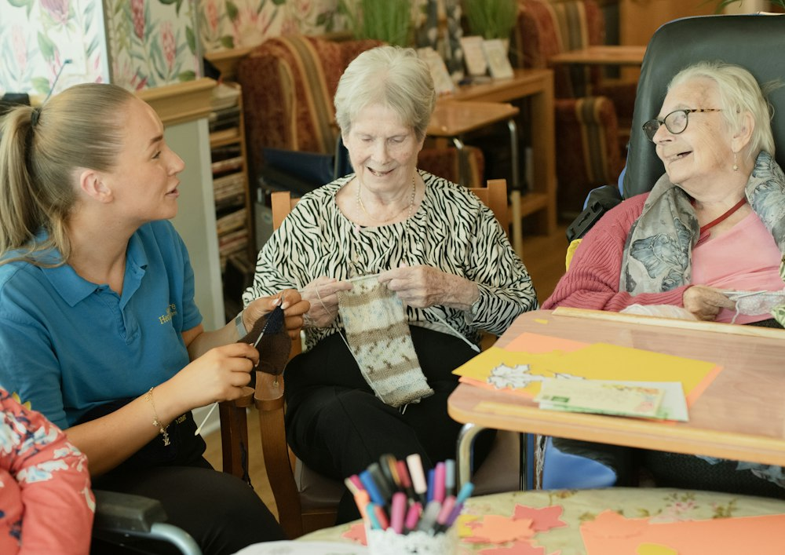

Our caregivers provide dignified, hands-on support with the activities of daily living so your loved one can stay safe, comfortable and confident at home.

Loneliness affects health. Our companions bring conversation, activities and genuine friendship, while giving family caregivers the time they need to rest and recharge.

Caregivers trained in dementia and chronic-condition support create calm, predictable routines and help manage conditions such as Alzheimer's, Parkinson's, diabetes and heart disease.
The first days after discharge are critical. We help your loved one settle in, follow the discharge plan and recover with regular wellness checks — reducing the risk of readmission.
When your loved one needs someone close by around the clock, our caregivers provide attentive overnight and live-in style support, based on care needs and availability.

For those living with serious illness, we work alongside families and health teams to relieve discomfort, ease stress and make every day as peaceful and meaningful as possible.
Good nutrition is the foundation of good health. We plan, shop for and cook healthy meals that match dietary needs, cultural preferences and personal tastes — and assist with feeding when needed.

A tidy, organized home supports independence and safety. Our caregivers take care of everyday chores so your loved one can enjoy their home without the stress.
Every service can be arranged in the way that works best for your family.
Short visits for help with routines, meals or companionship.
Regular daytime support, weekdays or weekends.
Safety and comfort through the night.
Continuous support with rotating caregivers.
Book a free, no-obligation in-home consultation. We'll listen, assess and build a care plan that fits your loved one perfectly.